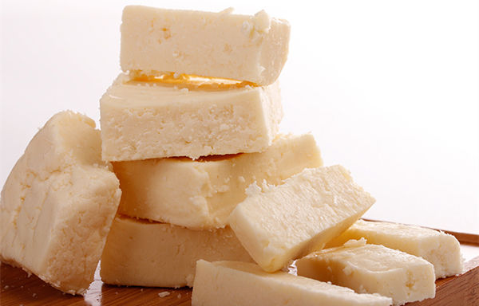
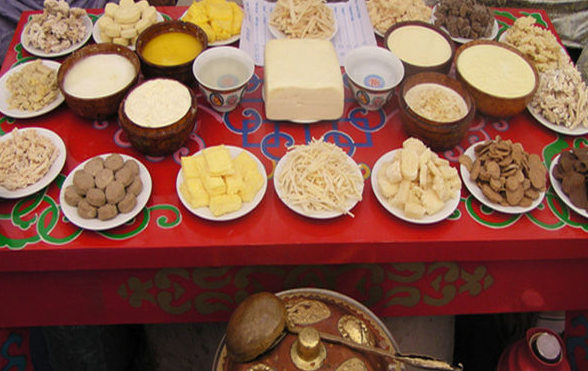
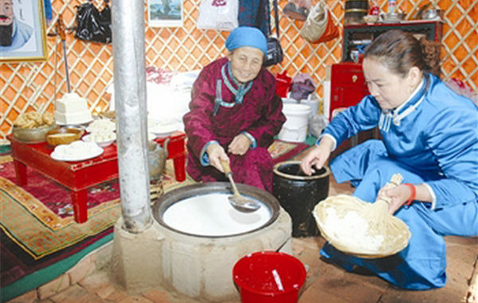
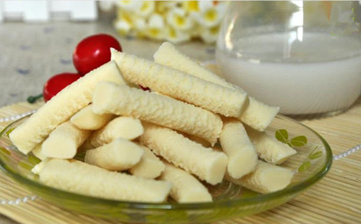
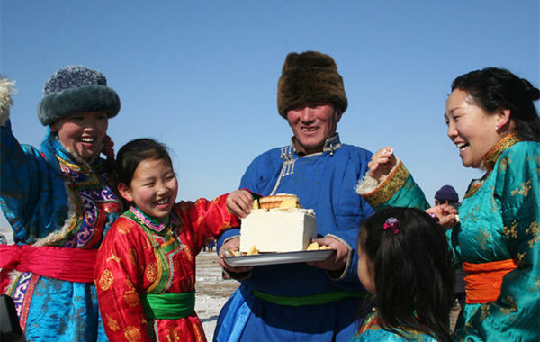
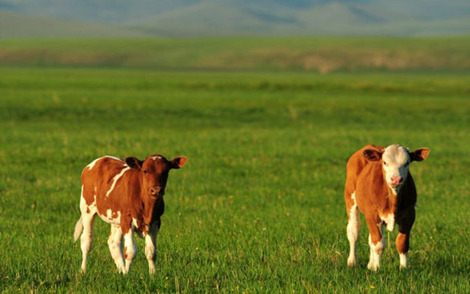
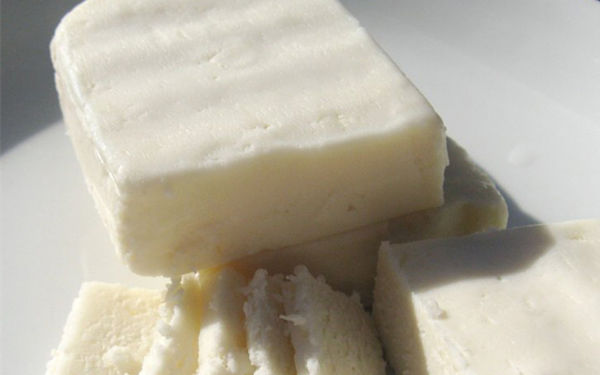

纯正的牧民手工脱脂奶豆腐(脱脂：提取掉牛奶中的脂肪，也就是我们所说的黄油)，鲜牛奶精制而成营养非常的丰富，是普通奶制品的很多倍。其特点易吸收、口感细腻，酸甜溜溜的有点冰激淋的口感，酥软，酸甜，咬到口中滑滑的感觉。手工奶豆腐完全采用鲜奶制作，那么奶豆腐怎么吃呢？下面就为大家介绍这一独具风味的内蒙古特产。
奶食分两种，纯鲜手工奶食和加工奶食零食，这两个者有很大的区别。 1、纯鲜手工奶食品 纯鲜手工奶食品是奶食经涟天然发酵制作而成，特点是微酸，凉吃有淡淡奶香，会掉奶清。质地充实，掰开酥软，口感不会有Q弹效果，保质期很短，必须冷冻保存。
内蒙人餐桌上全套奶食
2、加工奶食零食 加工奶食零食有特浓奶香(添加香精，奶精，植脂末的原因)，口感Q弹(有增稠剂和食用胶成分)。
现如今广大朋友吃零食都认为奶食应该是这个样的味道，却对纯天然奶食不怎么了解，其实真正营养健康的是纯鲜手工奶食。
奶质好做出奶食才好吃，大家小时候都喝过纯牛奶，煮开后奶香四溢表面结出一层奶皮和油花，但是现在超市买来的怎么喝也没那个味! 其中有几个原因：
1、要大批量天天产奶，必须给牛吃催乳剂，增产饲料，奶子失去原有的味道。 2、一份奶层层提取营养成分作出不同种类产品，这也是味道淡如水的原因。 3、相关资料显示，高温牛奶对人体的影响：用两头小牛做实验，吃鲜奶的小牛生长健康，吃加工奶的小牛在 60天内死亡。试验反复了很多次，都是同一样的结果。原因在于加工牛奶经过高温处理不仅把细菌杀死，一并把对身体有益的物质也杀死了，小牛是因为缺营养而死亡的…..
我们牧区，在很早以前就响应国家政策不再大规模放牧了，每家每户都是圈养或者承包牧场，大家看到的大草原牛羊成群，都是牧区深处才有的.
而且我们的奶牛并不是大家看到电视广告里的那种黑白牛，那终究都是大企业引进欧洲的品种，并不是蒙古地区的奶牛品种。那种大批量生产出的牛奶口感当然不如本地奶牛的醇厚，大家想想从工厂生出的牛奶为什么没有小时候喝的那股醇香味了，原因就在这里。
我们的奶牛：大多数都是内蒙地区本地牛，自然繁衍保持原生态，奶质相当好。日本人经常来大草原深处找牧民家奶捅里的酸奶菌，原因是我们的牛奶乳酸菌，保持了几百年以上的乳酸菌。对人体健康非常有益。.
日本人对食品最讲究，他们了解我们牛奶的营养价值。所以千万不要被电视广告蒙蔽双眼，任何食品一旦经过大批量生产就失去了原有的营养和味道。.
1、做拔丝奶豆腐最好吃(做法下面有介绍)。 2、直接吃，沾蜂蜜吃，沾白糖吃。 3、做披萨时加进去，和芝士奶酪的用法一样。无添加，更健康，口味香。 4、切片，晾干，制成奶豆腐干，可直接吃。 5、喜欢吃软一些的朋友，可以微波稍微加热，使其变软，口味更好。
1、先将奶豆腐切成三厘米长、一厘米宽、一厘米高的小块备用。 2、将鸡蛋打散，加入100克水，50克面粉搅拌成糊状，将切好的奶豆腐放在面糊里搅匀. 注意力度要轻，防止把奶豆腐搅碎。 3、坐锅热油，待油温7成热时，放入准备好的坯子炸，炸至金黄色时出锅。 4、将锅中炸完的剩油倒出，留一点点底油，放入绵白糖小火化开(一定要用小火，否则就糊锅了)，待搪全部化成红色的糖浆后放入炸好的坯子，快速搅拌均匀后出锅即可。
特别提示： 做拔丝，油炸奶豆腐时，时间不宜过长。要一粒一粒的炸，裹好糖出锅后，要一粒一粒拔开，现吃的话外脆内软，晾凉吃口味好。
1、奶豆腐怎么存放? 奶豆腐冷藏保存可以放几个月，一旦开袋最好在一周内吃完。稀奶油(爵口)冷藏保存，因为没有添加防腐剂，保质期比较短，开袋后尽快吃完，如想长时间存放，请冷冻可以保存几个月。
2、吃奶食品会发胖吗? 不必担心发胖问题，因为奶豆腐是纯天然未添加的奶食，所以不会有反式脂肪酸，不会发胖的。 内蒙人从小就离不开奶食，只有身体健康，抵抗力强的小朋友才能参加冬天零下30几度的那达慕大会，这都是奶食的功劳。
3、为什么同样的奶制品有黄的有白的，有的重有的轻? 只要懂一丁点的人都知道纯奶食品是微黄的，这个很正常的，一桶奶子分几层出奶油和奶皮，最上面的一层是最黄的，油份最大，下面的就会越来越白。奶豆腐放置几天以后也会发黄，那是水分蒸发掉了，我们吃的奶豆腐干就是晒干的，这样储存的时间比较长，更有嚼劲，还会出油，非常香!